Para la directora del plantel, Yaneth Miranda, la participación en este tipo
de espacios resulta fundamental, ya que fortalece la vinculación interinstitucional,
impulsa alianzas estratégicas y amplía las posibilidades de continuidad educativa
para el alumnado.
Con acciones como esta, el bachillerato reafirma su compromiso con una educación
de calidad y con la apertura de mayores oportunidades de crecimiento académico.
PLANTEL FORTALECE LA VINCULACIÓN CON INSTITUCIONES DE EDUCACIÓN SUPERIOR
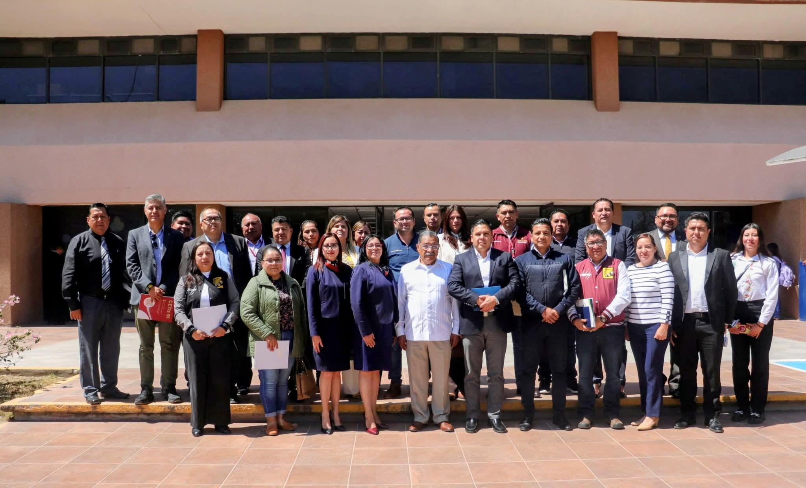
▲ Representantes del plantel participaron en la Reunión de Vinculación 2026, fortaleciendo alianzas académicas.
El Bachillerato General Plantel Tepeji del Río participó en la Reunión de Vinculación con Directores y Orientadores de las Instituciones de Educación Media Superior 2026, un espacio de diálogo enfocado en fortalecer la coordinación interinstitucional.
Durante el encuentro se brindó información clara y oportuna sobre la oferta educativa del Instituto Tecnológico Superior del Occidente del Estado de Hidalgo, permitiendo estrechar la comunicación entre instituciones y generar estrategias conjuntas en beneficio de las y los estudiantes.
Para la directora del plantel, Yaneth Miranda, la participación en este tipo de espacios resulta fundamental, ya que fortalece la vinculación interinstitucional, impulsa alianzas estratégicas y amplía las posibilidades de continuidad educativa para el alumnado.
Con acciones como esta, el bachillerato reafirma su compromiso con una educación de calidad y con la apertura de mayores oportunidades de crecimiento académico.
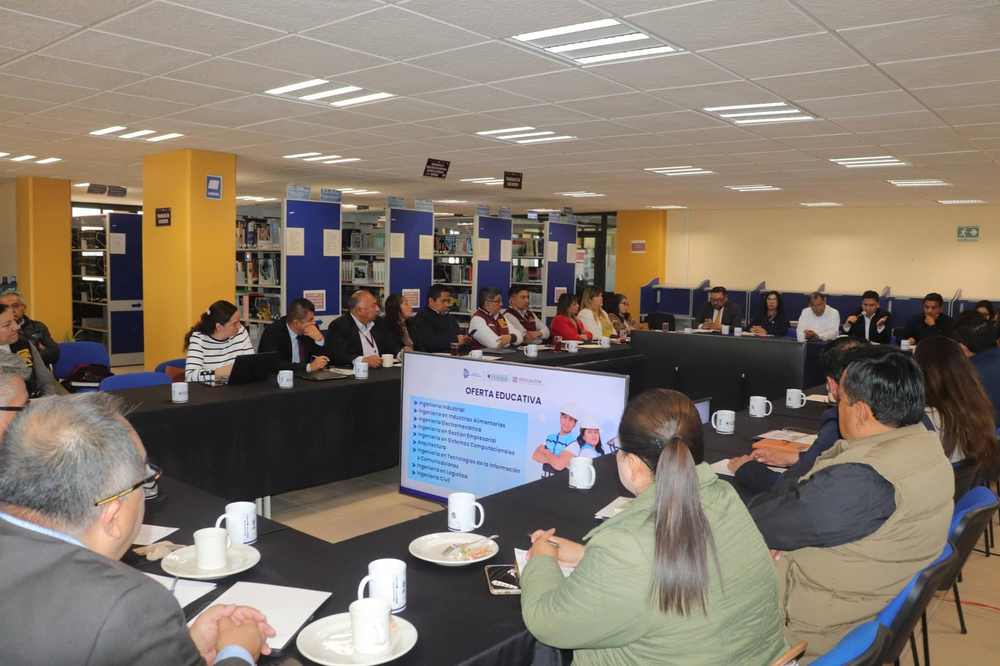
UNIDOS POR UNA CAUSA: SOLIDARIDAD ANTE LAS INUNDACIONES EN HIDALGO
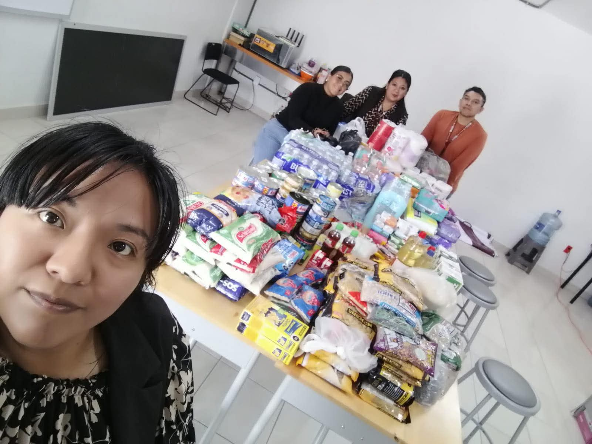
TRABAJO COORDINADO POR HIDALGO
El plantel se suma al plan de acción y atención encabezado por el gobernador Julio Menchaca, así como a la instrucción del Secretario de Educación, Dr. Natividad Castrejón Valdez.
En conjunto con el Director General del Bachillerato del Estado, Mtro. Elías Cornejo Sánchez, se convocó a continuar brindando apoyo a las familias que más lo necesitan.
Como parte del compromiso social que caracteriza al Bachillerato General Plantel Tepeji del Río, se realizó la entrega de víveres al Sistema DIF Hidalgo, destinados a la población afectada por las recientes inundaciones en el estado.
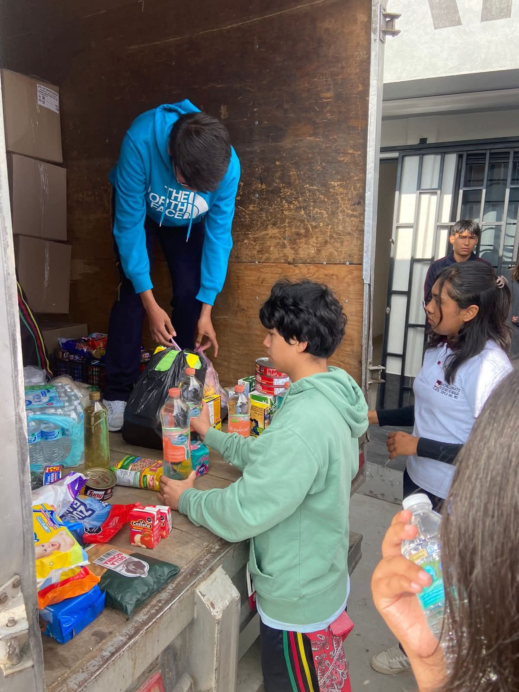
▲ Participación de alumnos en el centro de acopio del Plantel Tepeji del Río
POSIBILIDADES
Esta acción fue posible gracias a la solidaridad y participación activa de la comunidad estudiantil.
RECONOCIMIENTO A LA COMUNIDAD EDUCATIVA
Se reconoce ampliamente la colaboración de madres y padres de familia, personal directivo, docente, administrativo y de apoyo.
AGRADECIMIENTOS
Se agradece al Dr. Omar Martínez Solano por su apoyo y por facilitar el transporte para el traslado de los víveres.
COMPROMISO QUE TRASCIENDE
Estas acciones reflejan el sentido de responsabilidad social y empatía que distinguen a la comunidad educativa, reafirmando que la educación también se construye a través de la solidaridad y el trabajo conjunto en beneficio de la sociedad.
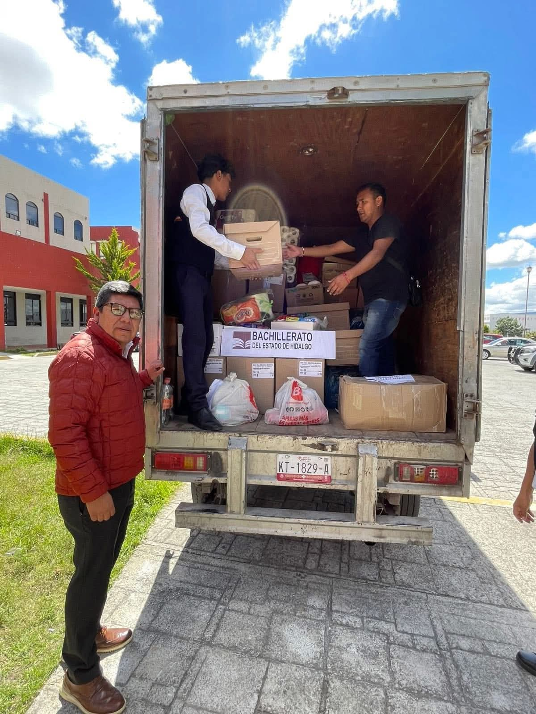
CONMEMORACIONES
DÍA NARANJA
Cada 25 de mes, el Bachillerato General Plantel Tepeji del Río participa en la conmemoración del Día Naranja, una iniciativa que busca prevenir y erradicar la violencia contra mujeres y niñas.
Durante la jornada se recordó que la violencia no siempre es física, ya que también puede manifestarse mediante comentarios ofensivos, control en redes sociales, celos excesivos o la normalización del acoso.
Asimismo, se destacó el papel fundamental de las y los jóvenes en la construcción de relaciones basadas en el respeto.
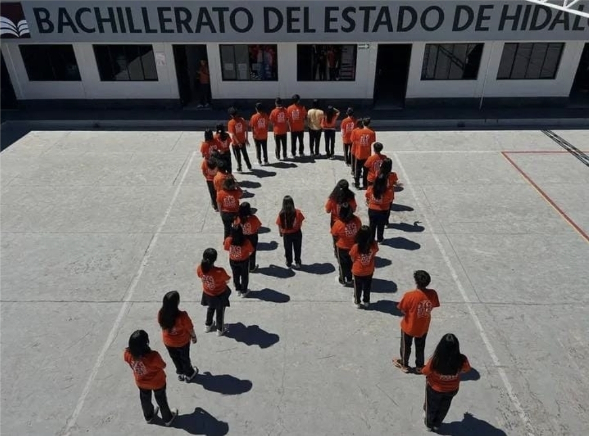
▲ Moño naranja.
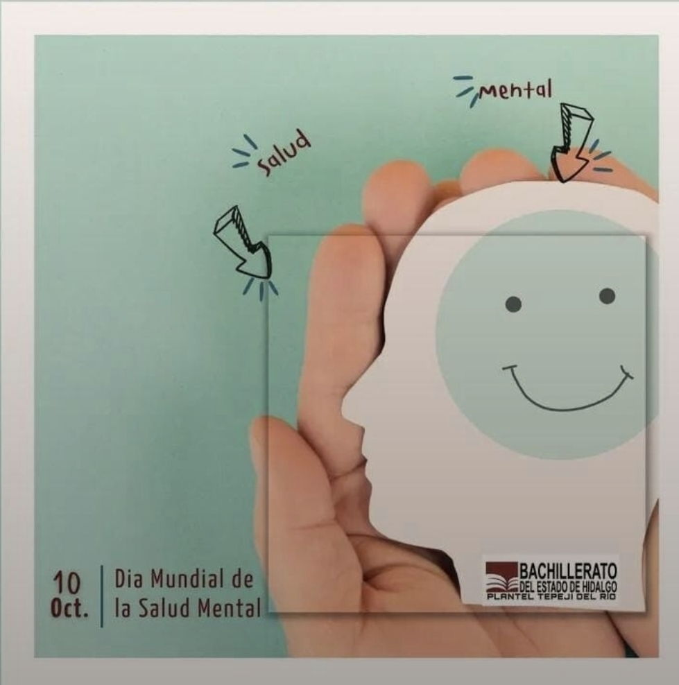
▲ Se conmemora el Día de la Salud Mental en la página oficial de la institución.
DÍA DE LA SALUD MENTAL
Conmemorando el 10 de octubre, Día Mundial de la Salud Mental, el Plantel promovió la importancia de cuidar la mente con la misma atención que se brinda al cuerpo.
Durante la jornada se destacó la relevancia de hablar abiertamente sobre las emociones, pedir ayuda cuando sea necesario y fomentar la empatía dentro de la comunidad estudiantil.
Se recordó que la salud mental es un pilar fundamental para el bienestar personal y social.
DÍA DE LA PAZ
El Plantel Tepeji del Río se sumó al Mosaico Nacional por la Paz y Contra las Adicciones, iniciativa impulsada por el Instituto Mexicano de la Juventud como parte de la Estrategia Nacional por la Paz.
La actividad tuvo como propósito unir a los 32 estados del país en un mensaje colectivo de paz, destacando el papel protagónico de las y los jóvenes en la construcción de una sociedad más consciente y libre de violencia y adicciones.
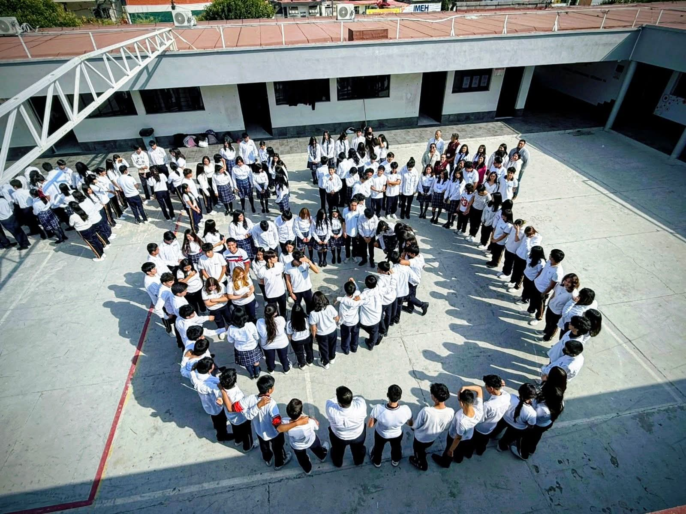
▲ Mosaico Nacional por la Paz.
LÍNEA DE LA VIDA
(800 911 2000)
DÍA CONTRA LA DEPRESIÓN
El 13 de enero, la comunidad dedicó un espacio a la reflexión en el Día Mundial contra la Depresión, una fecha que invita a mirar más allá de lo visible.
La depresión no siempre se manifiesta de forma evidente; en muchas ocasiones se oculta detrás del silencio, el agotamiento o frases cotidianas que disfrazan emociones profundas.
Por ello, la jornada buscó sensibilizar a las y los estudiantes sobre la importancia de reconocer señales y brindar apoyo sin prejuicios.
La iniciativa resaltó que acompañar, escuchar y generar espacios seguros dentro de la escuela puede marcar una diferencia significativa en la vida de quienes atraviesan momentos difíciles.
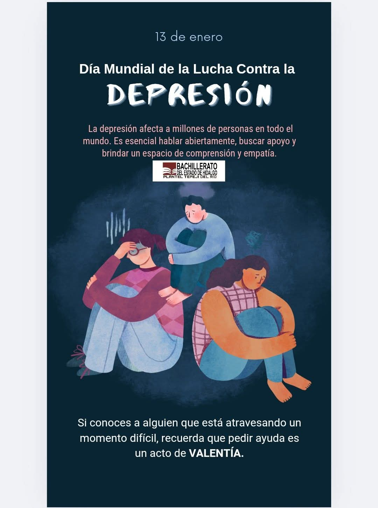
DÍA MUNDIAL CONTRA EL CÁNCER DE MAMA
A través del llamado "Árbol de la Salud", el 19 de octubre, los estudiantes participaron en una dinámica de sensibilización que representó la importancia de la detección temprana y la esperanza de supervivencia.
El moño rosa, símbolo internacional de esta causa, fue el elemento central de la actividad.
La iniciativa contó con la coordinación de la maestra Carmen Barrera Navarrete y la participación de diversos grupos, quienes contribuyeron a reforzar el mensaje de prevención y cuidado.
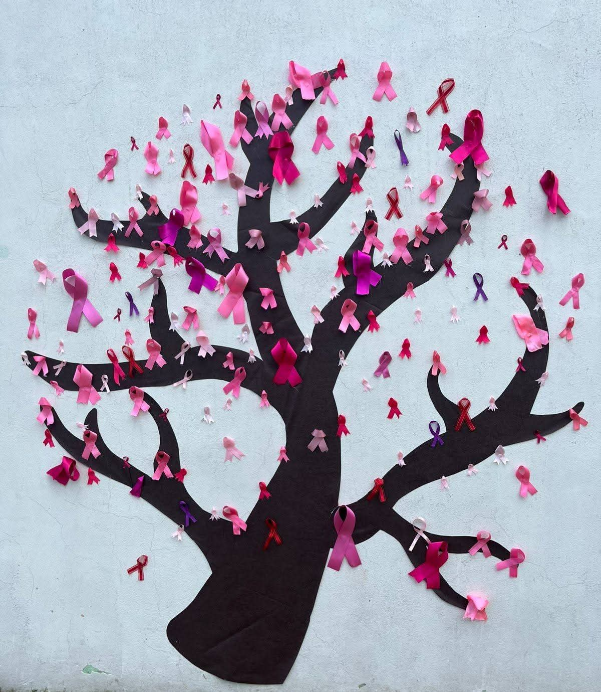
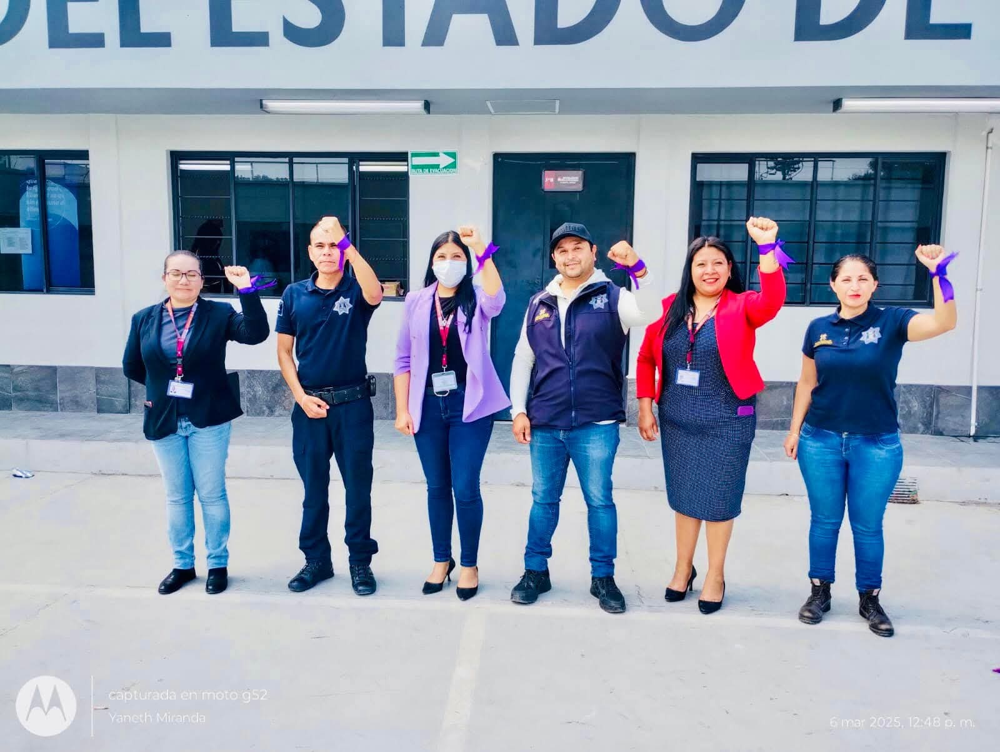
DÍA DE LA MUJER
En conmemoración del Día Internacional de la Mujer, los días 6 y 7 de marzo el Bachillerato llevó a cabo una jornada de actividades enfocadas en la reflexión, la prevención y el empoderamiento femenino.
Charlas, conferencias y talleres de defensa personal formaron parte del programa, generando espacios de diálogo sobre temas fundamentales como la Ley Olimpia, los tipos de violencia, el acoso escolar y la igualdad de género.
Entre las actividades destacaron: